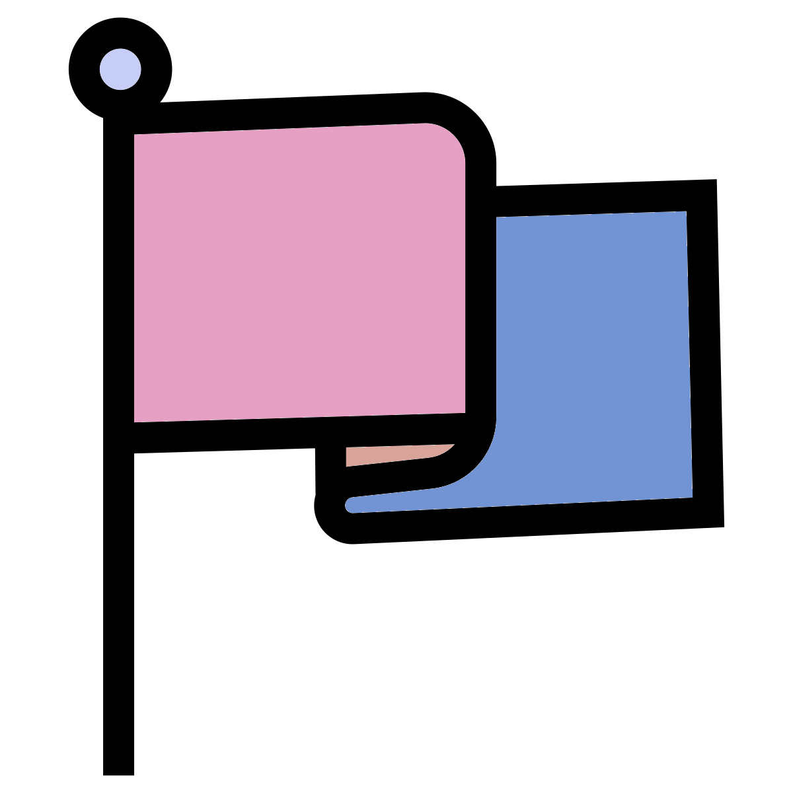

Chapter 6 Mapping sequences to the reference genome using BWA
BWA is a program for mapping sequences to a reference genome. Here we will use BWA to map our paired, trimmed sequences to the killer whale reference genome (GCF_000331955.2_Oorc_1.1_genomic.fna), and output a BAM (Binary sequence Alignment/Map format) file of the results.
Further information on the reference genome, such as the sex of the sequenced individual, the technology and assembly programs used, the number of scaffolds/contigs and the sequence coverage can be found on the NCBI website page for this assembly.
6.1 Reference sequence preparation

BWA uses indexing of the reference genome to speed up the mapping. The index needs to be prepared before we map our reads. As this takes some time, this has been run for you, but for information the command used to do this was:
bwa index GCF_000331955.2_Oorc_1.1_genomic.fna
This produces index files with the extensions '.sa', '.pac', '.ann', '.amb' and '.bwt' that will be automatically detected and used in the mapping step below.
6.2 Read mapping

To map our paired-end, trimmed reads type the following:
bwa mem \
/pub14/tea/nsc206/NEOF/popgenomics/genome/GCF_000331955.2_Oorc_1.1_genomic.fna \
SRR8861574_1_out_paired.fastq SRR8861574_2_out_paired.fastq | \
samtools sort -o SRR8861574_paired.bambwa mem is an alignment algorithm well suited to Illumina-length sequences. The default output is a SAM (Sequence Alignment Map format). However, here we pipe the output to samtools, a program for writing, viewing and manipulating alignment files, to sort and generate a BAM format, a binary, compressed version of SAM format.
The mapping will take a few minutes to run, during which some output messages will be printed to the screen. When it has finished you will see the command prompt $ and flashing cursor again.
We can view this file using samtools view and head to display only the first few lines:
The header section consists of lines starting with '@'. In this case, we have a header line for each of the scaffolds in the killer whale reference genome with their name (SN) and length in bp (LN) given.
To look at the information in the alignment section, we can leave out the -h option:
Here is an example of one line, representing information from one sequence read.
#{r, fig.align = 'center',out.width= '100%', echo=FALSE } #knitr::include_graphics(path = "figures/sam1.png", auto_pdf = TRUE) #
Each column contains information on where and how well the read aligns to the reference. After column 11 there can be several optional tags, often specific to the aligner used and can be useful for downstream analysis.
#{r, fig.align = 'left',out.width= '60%', echo=FALSE } #knitr::include_graphics(path = "figures/sam2.png", auto_pdf = TRUE) #
The image above is from a different alignment file to the one you have generated here. On the first line of your alignment file what is the query sequence name? What is the reference contig name?
In order to process the BAM files for further analysis, it is usually required that they are indexed. This can also be done with samtools:
Use ls to view the contents of your directory - you should now have an index file with the extensions .bam.bai.
6.3 Assessing mapping results

Lastly, we can use the samtools command flagstat to find information on how the reads mapped:
- How many reads have mapped?
- What percentage of reads have mapped?
This information is a summary of the FLAG values - the second field in the sam/bam file. These values can be used if you want to extract or exclude a specific set of reads for downstream analysis. For example, to exclude unmapped reads from our alignment file we can run:
The options used are:
-F: only include reads without this flag
-b: output in bam format
Conversely, you can use -f to include the reads with the specified flag.
The Broad Institute has a useful website to interpret the FLAG values, likewise they are listed in the samtools documentation.
Run flagstat on the bam file from which we have excluded the unmapped reads.
- How many reads are in the filtered file (compare this to the unfiltered file)?
- What proportion of the reads in this file are now mapped (compare this to the unfiltered file)?
In the next step, we will use alignment files from several samples to detect genetic variation.